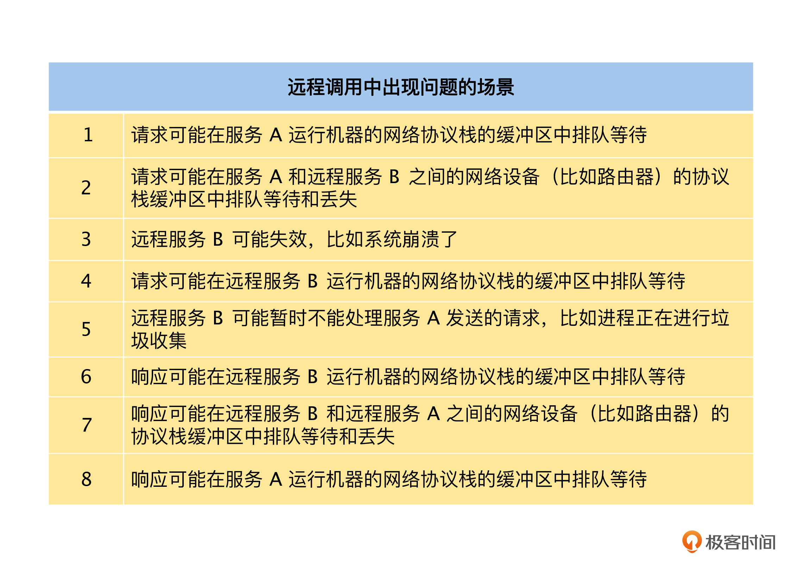
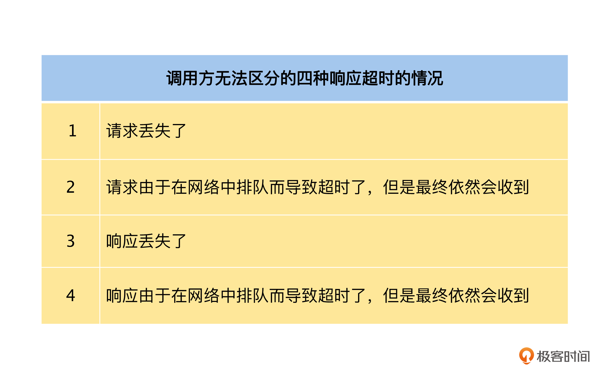
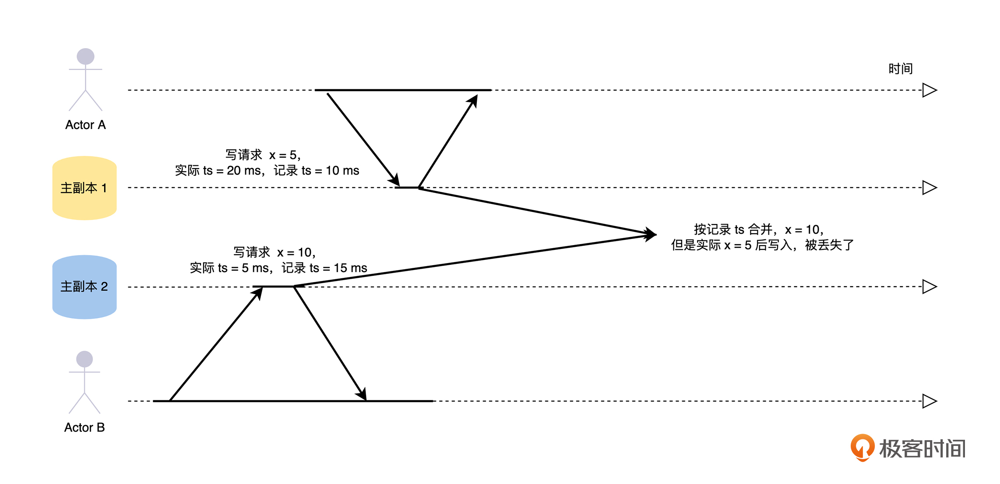
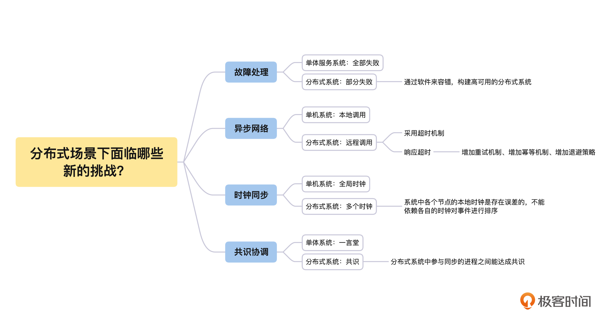

- 00 开篇词 掌握好学习路径，分布式系统原来如此简单.md.html
- 01 导读：以前因后果为脉络，串起网状知识体系.md.html
- 02 新的挑战：分布式系统是银弹吗？我看未必！.md.html
- 03 CAP 理论：分布式场景下我们真的只能三选二吗？.md.html
- 04 注册发现： AP 系统和 CP 系统哪个更合适？.md.html
- 05 负载均衡：从状态的角度重新思考负载均衡.md.html
- 06 配置中心：如何确保配置的强一致性呢？.md.html
- 07 分布式锁：所有的分布式锁都是错误的？.md.html
- 08 重试幂等：让程序 Exactly-once 很难吗？.md.html
- 09 雪崩（一）：熔断，让故障自适应地恢复.md.html
- 10 雪崩（二）：限流，抛弃超过设计容量的请求.md.html
- 11 雪崩（三）：降级，无奈的丢车保帅之举.md.html
- 12 雪崩（四）：扩容，没有用钱解决不了的问题.md.html
- 13 可观测性（一）：如何监控一个复杂的分布式系统？.md.html
- 14 可观测性（二）：如何设计一个高效的告警系统？.md.html
- 15 故障（一）：预案管理竟然能让被动故障自动恢复？.md.html
- 16 故障（二）：变更管理，解决主动故障的高效思维方式.md.html
- 17 分片（一）：如何选择最适合的水平分片方式？.md.html
- 18 分片（二）：垂直分片和混合分片的 trade-off.md.html
- 19 复制（一）：主从复制从副本的数据可以读吗？.md.html
- 20 复制（二）：多主复制的多主副本同时修改了怎么办？.md.html
- 21 复制（三）：最早的数据复制方式竟然是无主复制？.md.html
- 22 事务（一）：一致性，事务的集大成者.md.html
- 23 事务（二）：原子性，对应用层提供的完美抽象.md.html
- 24 事务（三）：隔离性，正确与性能之间权衡的艺术.md.html
- 25 事务（四）：持久性，吃一碗粉就付一碗粉的钱.md.html
- 26 一致性与共识（一）：数据一致性都有哪些级别？.md.html
- 27 一致性与共识（二）：它们是鸡生蛋还是蛋生鸡？.md.html
- 28 一致性与共识（三）：共识与事务之间道不明的关系.md.html
- 29 分布式计算技术的发展史：从单进程服务到 Service Mesh.md.html
- 30 分布式存储技术的发展史：从 ACID 到 NewSQL.md.html
- 春节加餐 技术债如房贷，是否借贷怎样取舍？.md.html
- 春节加餐 深入聊一聊计算机系统的时间.md.html
- 春节加餐 系统性思维，高效学习和工作的利器.md.html
- 结束语 在分布式技术的大潮流中自由冲浪吧！.md.html
- 捐赠
02 新的挑战：分布式系统是银弹吗？我看未必！
你好，我是陈现麟。
通过上一节课的介绍，你已经了解了分布式系统出现的原因和引入的新问题，并且我们一起讨论了这些新问题的处理思路。你对分布式系统的全局已经有了一个初步的认识，这就为后面的学习打下了良好的基础。
下一步，我们要从根本上理解分布式系统的设计方法和原则，这就需要你时刻谨记单体系统和分布式系统之间的差别。从本质上来说，单体系统是以单进程的形式运行在一个计算机节点上，而分布式系统是以多进程的形式运行在多个计算机节点上，二者的本质差别就导致了分布式系统面临着四个方面的新问题，分别是：故障处理、异步网络、时钟同步和共识协同。
所以，在这节课中，我们会从上述的四个方面来比较单体系统和分布式系统的差别，一起来探讨分布式系统会面临哪些新的挑战，而这些挑战又是怎么影响分布式系统的架构和设计的。
全部失败与部分失败
故障处理是所有系统都必须考虑的关键问题，所以我们从故障处理的角度开始分析。
单体服务系统中，在硬件正常的时候，对于一个确定的输入，总会得到一个确定的输出。就算是在内存、磁盘损坏等硬件异常的时候，对于一个确定的输入，计算机也会直接出现无法启动或崩溃的情况，而不是给出一个模棱两可或不正确的结果。
这种全部失败的处理逻辑，会大大减轻用户使用计算机的心智负担，让我们明确地知道，如果系统内部发生了故障，计算机不会给出错误的结果，而是会全部崩溃。那么处理计算机系统崩溃的方法就非常明确和简单了，重启计算机，重新运行程序即可。
相反，如果计算机给出了一个错误的结果，这些错误的结果和正常的结果混在一起，我们是无法感知的。比如一次硬件故障，导致所有的 0 都变成了 1 ，并且写入到了数据库中这种情况，它的代码逻辑是正确的，那么想要识别出来，再运行处理的成本就非常大了。
曾经某知名支付公司的系统实现了异地冷备，也就是除主机房外，在外地还有一个备用机房，备用机房运行的程序和主机房一模一样，只是不处理用户请求而已。但是有一次主机房故障时，这家公司并没有将流量切到冷备的机房。
公司这样考虑的主要原因是，虽然主机房故障，会导致系统暂时不能对外服务，出现很大的损失，但是这样的损失是能够评估出来的；可是，如果将流量切到冷备的机房去服务用户，很可能会出现其他不可预知的错误，这样产生的损失就无法评估了，结果也是我们不能承受的。
分布式系统由多个计算机节点组成，虽然每一个计算机节点都是全部失败的模型，但是如果系统中的某些节点出现宕机或者网络故障，整个分布式系统就会出现部分失败的情况，也就是说单机计算机系统这个确定性的全部失败的模型，在分布式系统中就无效了。这个问题大大增加了分布式系统的复杂性，也给我们处理分布式问题提高了难度。
部分失败的情况是构建分布式系统的一个大挑战，也深刻影响着分布式系统的设计方式和原则。在分布式系统中，我们需要接受部分失败，接受系统中每一个部分可能出现故障的情况，在不可靠的硬件上通过软件来容错，构建高可用的分布式系统。
所以，在分布式系统中，故障处理是软件设计的一个重要组成部分。我们需要时刻谨记节点宕机、网络分区等各种问题出现时，系统应该怎么正确处理，比如分布式系统在设计的时候，每一个组件都必须是高可用的。
在网络出现分区的时候，系统必须能够正确处理，在网络分区恢复的时候，系统也必须正确处理，不能出现不可预知的错误，特别是在进行数据复制的时候。
本地调用与远程调用
接下来，我们还要从当前广泛使用的异步网络的角度来分析。单体系统和分布式系统对网络的依赖程度有非常明显的差别，单体内部几乎不依赖网络，但是网络却是架构分布式系统的根基。
在单机系统中，系统各个组件之间的调用方式非常简单，直接本地调用即可。但是在分布式系统中，不同的组件运行在不同的机器上，通过本地调用是不可行的，我们只能通过网络来进行调用，即远程调用。
虽然两个调用的差别只在于远程调用多依赖了网络这个通道，但是这却给系统带来了非常大的复杂性，其实主要原因还是网络本身的复杂性所导致的。所以接下来，我们再一起讨论一下网络带给系统的复杂性。单机系统的本地调用方式，我们可以理解为只要发起调用，调用操作就一定会执行，并且我们可以忽略调用方和被调用方之间的数据传递时间。
但是单机系统的本地调用模型在远程调用上是不成立的，因为远程调用是通过网络来发送数据的，而我们目前依赖的网络是异步的，从一个节点发送数据到另一个节点，不能保证在多少时间内到达，甚至不能保证一定能到达；如果网络是同步的，能够保证从一个节点发送到另一个节点的数据，最慢会在多长时间内一定能到达，这样就可以大大简化远程调用带来的复杂性了。
这个时候你一定在想，我们能不能实现一个同步网络呢？其实是可以实现的，如果从节点 A 发送数据到节点 B，我们只需在节点 A 和节点 B 之间，建立一条带宽充足的专门链路，用于这一次数据的传递就可以达到要求。可是，这样会导致整个网络的效率太低，对于目前的互联网来说是不现实的。
比如，你开车从北京到上海，如果直接走目前的公路网，什么时候能到上海，这个时间是不能确定的，因为一路上很多地方会出现不同程度的堵车。但是如果指定一条专线给你，这条专线只能走你的车，其他人的车都不能走，这样就肯定不会堵车，你也可以准确计算出从北京到上海的开车时间。但是在这个例子中，你也能看到专线模式会导致整个公路网络的运行效率非常低，所以这种情况在我们的日常生活中是不可能实现的。
所以你会发现，远程调用在时间上有不确定性，那么我们就来讨论一下，服务 A 通过网络远程调用服务 B 可能会出现哪些不确定的情况。在我们使用极客时间 App 的过程中，如果出现加载不出来或者系统内部错误的问题，主要和远程调用模型面临的网络排队、丢包和请求服务崩溃等情况有关，具体的场景和示意图如下：-

在这样的情况下，通常的做法是采用超时机制，请求方在发起请求后，设置一个超时时间，这样能确保请求方在超时时间内，一定能得到一个响应。如果在超时时间内，请求方得到了明确的响应，不论这个响应是被调用服务回复的，还是网络地址不可达等网络错误，调用方都可以根据响应结果一一来处理。
比如，极客时间的用户去购买一个课程，如果订单服务响应为购买成功或者余额不足，我们可以将回复反馈给用户；如果是网络地址不可达，我们就可以知道这个购买请求还没有被订单服务处理过，可以采取重试等其他的办法来处理。
但是，如果请求在超时时间内没有收到任何响应，即响应超时，那么调用方将无法区分下面四种情况：-
 -
在响应超时的情况下，如果调用方想确保这个请求被执行，只能重新发送刚刚的请求。但是，如果之前的请求只是在网络中延迟或者响应丢失了，例如上面 2、3 和 4 中描述的情况，重试操作会导致这个请求被多次执行；如果之前的请求在网络中丢失了，例如上面 1 描述的情况，那么调用方不进行重试的话，这个请求就会出现一次都没有被执行过的情况。
-
在响应超时的情况下，如果调用方想确保这个请求被执行，只能重新发送刚刚的请求。但是，如果之前的请求只是在网络中延迟或者响应丢失了，例如上面 2、3 和 4 中描述的情况，重试操作会导致这个请求被多次执行；如果之前的请求在网络中丢失了，例如上面 1 描述的情况，那么调用方不进行重试的话，这个请求就会出现一次都没有被执行过的情况。
所以，在分布式系统的设计中，我们要充分考虑通过网络进行远程调用导致的不确定性，比如在响应超时的情况下增加重试机制，确保请求能最少执行一次。在重试的时候增加幂等的机制，确保请求只被精确处理一次，并且对重试机制增加退避策略，确保系统不会因为重试导致雪崩。
全局时钟与多个时钟
我们在上面讨论了故障处理和异步网络带来的挑战，接下来我们再一起来探讨分布式系统多个时钟的问题，从时钟同步的角度继续分析分布式系统面临的挑战。
计算机系统一般是通过石英钟来计算时间的，但是石英钟的振动频率会随着温度等原因变慢或变快，所以在运行时间比较长后，计算机系统的时间可能会发生比较大的误差，所以人们又增加了一组专门的时间服务器。我们可以认为这些时间服务器的时间是准确的，计算机系统通过网络定期获得时间服务器的时间，来调整本地时间，即网络时间协议（NTP）。我们可以通过下面的公式来计算当时的时间：
本地时间 = 时间服务器的返回时间 + 时间服务器响应的网络时延
这里我们可以来回忆一下，刚才我们在远程调用的话题中，知道了网络时延是不可预测的，所以通过 NTP 我们依然无法获得准确的时间，一般的精度都是在几十毫秒的范围内。不过，这个精度对于单机系统来说是足够的，我们一起来看看这是为什么。
在计算机系统中，时间主要有两个作用，第一个是记录事件发生的时间，这是一个绝对时间，是让我们来阅读和理解的。我们平时使用时间的精度一般为分钟，对于几十毫秒的误差是毫无感知的，比如我们经常说今天 12 点 30 分做了什么事情，很少提到多少秒，毫秒就更不会提了。
第二个是记录事件之间的发生顺序，这是一个相对时间。我们平时只关心事件之间的顺序，对于精度是没有要求的，比如对同一个字段的两个修改操作，我们认为一定是后一个的修改操作覆盖前一个操作的数据。
在单机系统中，由于只有一个时钟，先执行的事件一定能获得更小的时间，通过本地时钟就可以确保全局事件之间顺序的正确性，所以单机系统是一个全局时钟的模型。
而分布式系统是由多台计算机节点组成的，每一个节点都有自己的时钟，并且计算机执行的速度非常快，在一个毫秒内可以做非常多的事情。在这种情况下，如果在每一个节点，我们都采用本地的时钟来记录事件的发生时间，然后基于多个节点上的事件按发生时间进行排序，就很容易出现时间穿越的问题。下面我举例来分析，你可以结合下图进行思考。
- 比如在多主复制的情况下，客户端 A 在主副本 1 修改了 x = 5，记录时间为 10 ms，但是该副本时间慢了 10 ms，所以实际时间为 20 ms。几乎同一时间，客户端 B 在主副本 2 修改了 x = 10，记录时间为 15 ms，但是该副本时间快了 10 ms，所以实际时间为 5 ms。
一般对于这种情况的处理策略是最后写入获胜（LWW），在数据合并的时候，如果按照主副本 1、2 的记录时间来处理的话，最终 x = 10，会导致主副本 1 的修改丢失。
所以，在分布式系统的设计中，我们一定要谨记系统中各个节点的本地时钟是存在误差的，不能依赖各自的时钟对事件进行排序。
一般对于这个问题的解决思路有两个，一个是回到单机系统的全局时钟的模式，所有节点对于需要排序的事件时间，不使用本地时钟的时间，而是去请求同一个时间服务器获得事件的发生时间，然后依据这个时间进行排序；另一个是 Google 在 Spanner 中使用的，通过 GPS 和原子钟实现 TrueTime API 来解决。对于这一块内容，在课程的“事务（三）”中有详细的介绍，这里就不再赘述了。
一言堂与共识
最后，我们不要忘记分布式系统内部，多个实例或服务之间的协同问题，所以，我们接下来从共识协调的角度来分析。
在计算机系统中，我们经常要面对这样的情况：同时只允许一个线程操作某一个数据，和同时只允许一个线程执行某一个操作，如果不遵守这个规则，就可能会导致数据错误等不可预料的后果，这就是线程之间的同步操作。
在单体系统中，需要协同的多个线程是属于同一个进程的，所以同步操作很简单，直接使用进程内的资源来做协同就可以了，比如锁、信号量等。对于这些线程来说，所有的同步操作都以进程的资源为准，就好像进程是一个一言堂的管理员，协同进程内部的所有线程之间的同步。
但是，单体系统的单进程、多线程的同步模型，对于分布式系统是不适用的，因为分布式系统中各个组件都是独立的进程，运行在不同的机器上。所以，对于分布式系统来说，我们需要处理的是一个跨机器的多进程同步问题。那么，我们应该怎么来解决呢？
聪明的你应该很快就能想到一个方法，我们选择一个服务来做同步操作的管理者（我们称为同步服务），在多个进程间需要同步时，就到同步服务来请求一个锁，获得锁的进程就可以操作，其他的进程就必须等待。
这样看似将问题解决了，但是结合我们前面讨论过的，在做分布式系统设计的时候，我们必须要考虑到故障的存在，所以同步服务不能只有一个实例，它需要多个实例来保障它的高可用，那么同步服务应该由哪一个实例，来处理其他进程的同步请求呢？
你可能会想通过配置直接指定一个，这确实解决了同步服务启动时的问题，但是如果被指定实例宕机了，接下来该由哪一个实例来继续处理同步请求呢？
所以，我们通过这些讨论，会发现问题依然没有解决，只是转移了，也就是将分布式系统的多进程同步问题变成了同步服务的选主问题。其实，这是一个共识问题，需要分布式系统中参与同步的进程之间能达成共识，目前我们是通过 Paxos 或者 Raft 这样的共识算法来解决问题的。对于这一块内容，在后面的“一致性与共识”课程中会有详细的介绍，这里就不再赘述了。
总结
到这里，我们一起讨论了在分布式系统场景下面临的新挑战，我们一起来总结一下这节课的主要内容：- 首先，分布式系统由多个单机计算机节点组成，在系统中的某些节点出现故障或者网络故障时，整个分布式系统都会出现部分失败的情况。所以我们需要接受部分失败，接受系统每一个部分可能出现故障的情况，在不可靠的硬件上通过软件来容错，构建高可用的分布式系统。
然后，在分布式系统中，不同的组件运行在不同的机器上，只能通过网络来进行远程调用。当远程调用由于网络原因异常失败时，我们无法区分当前的请求是否被执行过，于是如何确保请求只被精确处理一次成为了分布式场景下新的挑战。
接着，我们了解到分布式系统是由多台计算机节点组成的，每一个节点都有自己的时钟，并且由于硬件和网络的原因，系统中各个节点的本地时钟是存在误差的，不能依赖各自时钟对事件进行排序，这就导致如何对系统中的事件进行排序，变成分布式场景下新的挑战。
最后，分布式系统各个组件都是独立的进程，运行在不同的机器上，这就导致单体系统的单进程、多线程的同步模型变成了跨机器的多进程同步模型，要解决这个问题，就需要分布式系统中参与同步的进程之间能达成共识。
思考题
分布式系统面临故障处理（部分失败）、异步网络、时钟同步和共识协调，这四个新的挑战和 CAP 理论之间是什么关系呢？
欢迎你在留言区发表你的看法。如果这节课对你有帮助，也推荐你分享给更多的同事、朋友。
© 2019 - 2023 Liangliang Lee. Powered by gin and hexo-theme-book.